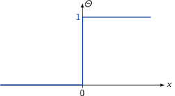
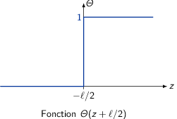
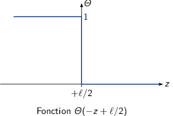
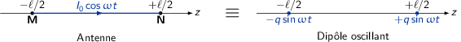
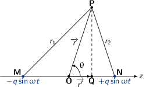
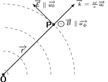
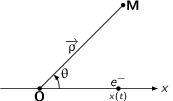

TD7 : Rayonnement
1 Rayonnement d'une antenne
Soit un conducteur de longueur ℓ parcouru par un courant périodique \(I=I_0\cos\omega t\). La fonction d'Heaviside a pour représentation

- En supposant que \(\vv{j}\) est nul à l'extérieur du fil, seul le courant
traversant le fil contribue à la densité volumique de courant
\(j(x,y,z,t)\). Par définition, le courant \(I\) est égal au flux de \(\vv{j}\) au
travers du surface \(S\) : \(I=\iint\vv{j}.\vv{dS}\). Le fil étant de section
infinitésimale et le courant étant non nul pour \(z\in[-\ell/2,\ell/2]\), la
densité de courant s'écrit
\begin{align*}
\vv{j}(x,y,z,t)&=I(t)\times\delta(x)\times\delta(y)\times\Theta(z+\ell/2)\times\Theta(-z+\ell/2)\,\vv{u_z}\\
&=I_0\cos\omega t\delta(x)\delta(y)\,\Theta(z+\ell/2)\,\Theta(-z+\ell/2)\,\vv{u_z}
\end{align*}
où
  On note, par ailleurs, que la dimension de \(j\) est bien celle d'une intensité par unité de surface car \(\delta=\frac{d\Theta}{dx}\to[\delta]=[L^{-1}]\).
- L'équation de conservation de la charge s'écrit
\begin{align*}
\div\vv{j}+\frac{\partial\rho}{\partial t}&=0\\
-\frac{\partial\rho}{\partial t}&=\frac{\partial j_z}{\partial z}\\
&=I_0\cos\omega t\delta(x)\delta(y)\left[\frac{d\Theta(z+\ell/2)}{dz}\Theta(-z+\ell/2)+\Theta(z+\ell/2)\frac{d\Theta(-z+\ell/2)}{dz}\right]\\
&=I_0\cos\omega t\delta(x)\delta(y)\left[\delta(z+\ell/2)\Theta(-z+\ell/2)-\Theta(z+\ell/2)\delta(-z+\ell/2)\right]
\end{align*}
Or \(\delta(z+\ell/2)\) est nul pour toute valeur de \(z\) différente de \(-\ell/2\). De même, \(\delta(-z+\ell/2)\) est nul pour toute valeur de \(z\) différente de \(+\ell/2\). On déduit donc que le produit \(\delta(z+\ell/2)\Theta(-z+\ell/2)\), respectivement \(\delta(-z+\ell/2)\Theta(z+\ell/2)\), est non nul uniquement en \(z=-\ell/2\), respectivement en \(z=+\ell/2\). L'expression de la dérivée temporelle de \(\rho(x,y,z,t)\) devient
\begin{align*} -\frac{\partial\rho}{\partial t}&=I_0\cos\omega t\delta(x)\delta(y)\left[\delta(z+\ell/2)-\delta(-z+\ell/2)\right]\\ \rho(x,y,z,t)&=-\frac{I_0}{\omega}\sin\omega t\delta(x)\delta(y)\left[\delta(z+\ell/2)-\delta(-z+\ell/2)\right] \end{align*}On déduit donc que les seuls points où la charge est non nulle sont
\begin{align*} \rho\neq0\text{ pour }\left\{ \begin{array}{l} x=0,y=0,z=-\ell/2\to\rho_M=-\frac{I_0}{\omega}\sin\omega t\\ x=0,y=0,z=+\ell/2\to\rho_N=+\frac{I_0}{\omega}\sin\omega t\\ \end{array} \right. \end{align*}L'antenne est ainsi équivalente à un dipôle oscillant avec \(q=\frac{I_0}{\omega}\)

- En notation complexe, les expressions de \(\vv{j}\) et \(\rho\) s'écrivent
\begin{align*}
\vv{j}(\vv{r},t)&=I_0\,e^{-i\omega t}\delta(x)\delta(y)\Theta(z+\ell/2)\Theta(-z+\ell/2)\vv{u_z}\\
\rho(\vv{r},t)&=-i\frac{I_0}{\omega}\,e^{-i\omega t}\underbrace{\delta(x)\delta(y)\left[\delta(z+\ell/2)-\delta(-z+\ell/2)\right]}_{\delta(\vv{r}+\ell/2\vv{u_z})-\delta(-\vv{r}+\ell/2)\vv{u_z}}
\end{align*}
L'utilisation de la notation complexe a pour unique but de faciliter les calculs : seule la composante réelle a un sens physique.
- Calcul des potentiels en un point \(P(r,\theta,\phi)\) à l'instant \(t\)

- Expression du potentiel scalaire retardé (potentiel de Liénard-Wiechert)
\begin{align*}
V_\text{retardé}&=\frac{1}{4\pi\epsilon_0}\iiint\frac{\rho(r',t')}{\|\vv{r}-\vv{r'}\|}\vv{dr'}\\
&\text{où }t'=t-\frac{\|\vv{r}-\vv{r'}\|}{c}\text{ et }\|\vv{r}-\vv{r'}\|=QP
\end{align*}
Soit
\begin{align*} V_\text{retardé}&=-\frac{iq}{4\pi\epsilon_0}\iiint\frac{e^{-i\omega\left(t-\frac{\|\vv{r}-\vv{r'}\|}{c}\right)}}{\|\vv{r}-\vv{r'}\|}\left[\delta(\vv{r'}+\ell/2\vv{u_z})-\delta(-\vv{r'}+\ell/2\vv{u_z})\right]d\vv{r'} \end{align*}Les seules positions de \(Q\) où cette intégrale est non nulle sont les points \(M\) et \(N\) pour lesquels \(\|\vv{r}-\vv{r'}\|=MP=r_1\) et \(\|\vv{r}-\vv{r'}\|=NP=r_2\) d'où
\begin{align*} V_\text{retardé}&=-\frac{iq}{4\pi\epsilon_0}\left[\frac{e^{-i\omega\left(t-\frac{r_1}{c}\right)}}{r_1}-\frac{e^{-i\omega\left(t-\frac{r_2}{c}\right)}}{r_2}\right]\\ &=\frac{iq}{4\pi\epsilon_0}\,e^{-i\omega t}\left[\frac{e^{i\omega\frac{r_2}{c}}}{r_2}-\frac{e^{i\omega\frac{r_1}{c}}}{r_1}\right] \end{align*} - \(\lambda=\frac{2\pi c}{\omega}\) et \(r\gg\lambda\gg\ell\)
- \(r\gg\ell\) : approximation dipolaire
- \(r\gg\lambda\) : approximation champ lointain
- \(\lambda\gg\ell\) : approximation non-relativiste
Sous ces approximations, les distances \(r_1\) et \(r_2\) deviennent
\begin{align*} r_1^2=\left(\vv{MO}+\vv{OP}\right)^2&=MO^2+OP^2+2\vv{MO}.\vv{OP}\\ &=\frac{\ell^2}{4}+r^2+2\frac{\ell}{2}r\cos\theta\\ &\simeq r^2\left(1+\frac{\ell}{r}\cos\theta+\cancel{\frac{\ell^2}{4r^2}}\right)\\ r_1&\simeq r\left(1+\frac{\ell}{2r}\cos\theta\right)\\ r_2^2=\left(\vv{NO}+\vv{OP}\right)^2&\simeq r^2\left(1-\frac{\ell}{r}\cos\theta\right)\\ r_2&\simeq r\left(1-\frac{\ell}{2r}\cos\theta\right) \end{align*}Le potentiel retardé s'écrit
\begin{align*} V_\text{retardé}&\simeq\frac{iq}{4\pi\epsilon_0}e^{-i\omega t}\left[ \begin{array}{ll} &\frac{1}{r}\left(1+\frac{\ell}{2r}\cos\theta\right)\,e^{i\omega\frac{r}{c}}\,e^{-i\omega\frac{\ell}{2c}\cos\theta}\\ -&\frac{1}{r}\left(1-\frac{\ell}{2r}\cos\theta\right)\,e^{i\omega\frac{r}{c}}\,e^{+i\omega\frac{\ell}{2c}\cos\theta}\\ \end{array} \right]\\ &\simeq\frac{iq}{4\pi\epsilon_0\,r}e^{-i\omega\left(t-\frac{r}{c}\right)}\left[\left(1+\frac{\ell}{2r}\cos\theta\right)e^{-i\omega\frac{\ell}{2c}\cos\theta}-\left(1-\frac{\ell}{2r}\cos\theta\right)e^{+i\omega\frac{\ell}{2c}\cos\theta}\right]\\ &\simeq\frac{iq}{4\pi\epsilon_0\,r}e^{-i\omega\left(t-\frac{r}{c}\right)}\left[e^{-i\omega\frac{\ell}{2c}\cos\theta}-e^{+i\omega\frac{\ell}{2c}\cos\theta}+\frac{\ell}{2r}\cos\theta\left(e^{-i\omega\frac{\ell}{2c}\cos\theta}+e^{+i\omega\frac{\ell}{2c}\cos\theta}\right)\right]\\ &\text{or }e^{+i\phi}+e^{-i\phi}=2\cos\phi\text{ et }e^{-i\phi}-e^{+i\phi}=-2i\sin\phi\\ V_\text{retardé}&\simeq\frac{iq}{4\pi\epsilon_0\,r}e^{-i\omega\left(t-\frac{r}{c}\right)}\left[-2i\sin\left(\omega\frac{\ell}{2c}\cos\theta\right)+\frac{2\ell}{2r}\cos\theta\cos\left(\omega\frac{\ell}{2c}\cos\theta\right)\right] \end{align*}Sachant que \(\omega=\frac{2\pi c}{\lambda}\), \(\frac{\omega}{c}\ell=\frac{2\pi\ell}{\lambda}\) et \(\lambda\gg\ell\) d'où \(\frac{\omega\ell}{2c}\ll1\). Le développement limité de la fonction sinus et de la fonction cosinus est, au voisinage de 0, \(\sin\epsilon\simeq\epsilon\) et \(\cos\epsilon\simeq1+\epsilon^2\) soit
\begin{align*} V_\text{retardé}&\simeq\frac{iq}{4\pi\epsilon_0\,r}e^{-i\omega\left(t-\frac{r}{c}\right)}\left[-2i\omega\frac{\ell}{2c}\cos\theta+\frac{\ell}{r}\cos\theta\right]\\ &\text{ or }\frac{\ell}{r}\ll\frac{\omega\ell}{c}=\frac{2\pi\ell}{\lambda}\\ V_\text{retardé}&\simeq-\frac{iq}{4\pi\epsilon_0\,r}e^{-i\omega\left(t-\frac{r}{c}\right)}i\omega\frac{\ell}{c}\cos\theta\\ &\simeq-\frac{1}{4\pi\epsilon_0}\times\frac{i\omega}{cr}\times iq\ell e^{-i\omega\left(t-\frac{r}{c}\right)}\cos\theta\\ &\simeq-\frac{1}{4\pi\epsilon_0}\times\frac{i\omega}{cr}\times p\cos\theta \end{align*} - L'expression du potentiel-vecteur \(\vv{A}\) s'écrit
\begin{align*}
\vv{A}&=\frac{\mu_0}{4\pi}\iiint\frac{\vv{j}(\vv{r'},t')}{\|\vv{r}-\vv{r'}\|}\vv{dr'}\\
&=\frac{\mu_0I_0}{4\pi}\underbrace{\int\delta(x')dx'}_{=1}\underbrace{\int\delta(y')dy'}_{=1}\int_{-\ell/2}^{+\ell/2}\frac{e^{-i\omega\left(t-\frac{\|\vv{r}-\vv{r'}\|}{c}\right)}}{\|\vv{r}-\vv{r'}}dz'\vv{u_z}\\
&=\frac{\mu_0I_0}{4\pi}e^{-i\omega t}\vv{u_z}\times\int_{-\ell/2}^{+\ell/2}\frac{e^{i\omega\frac{\|\vv{r}-\vv{r'}\|}{c}}}{\|\vv{r}-\vv{r'}}dz'
\end{align*}
Dans la mesure où \(\|\vv{r}-\vv{r'}\|\sim r\), l'expression du potentiel-vecteur se réduit à
\begin{align*} \vv{A}&\simeq\frac{\mu_0I_0}{4\pi}e^{-i\omega t}\vv{u_z}\times\frac{e^{i\omega\frac{r}{c}}}{r}\int_{-\ell/2}^{+\ell/2}dz'\\ &\simeq\frac{\mu_0I_0}{4\pi}\times\frac{\ell}{r}e^{-i\omega\left(t-\frac{r}{c}\right)}\vv{u_z} \end{align*}En utilisant le moment dipolaire complexe retardé \(p=iql\,e^{-i\omega\left(t-\frac{r}{c}\right)}\) et sachant que \(q=\frac{I_0}{\omega}\), on obtient
\begin{align*} \vv{A}&\simeq\frac{\mu_0}{4\pi\,r}\omega q\ell e^{-i\omega\left(t-\frac{r}{c}\right)}\vv{u_z}\\ &\simeq-\frac{i\mu_0}{4\pi\,r}\omega p\vv{u_z} \end{align*}
- Expression du potentiel scalaire retardé (potentiel de Liénard-Wiechert)
\begin{align*}
V_\text{retardé}&=\frac{1}{4\pi\epsilon_0}\iiint\frac{\rho(r',t')}{\|\vv{r}-\vv{r'}\|}\vv{dr'}\\
&\text{où }t'=t-\frac{\|\vv{r}-\vv{r'}\|}{c}\text{ et }\|\vv{r}-\vv{r'}\|=QP
\end{align*}
- Calcul du champ électromagnétique \(\vv{B}=\rot\vv{A}\) et \(\vv{E}=-\grad
V-\frac{\partial\vv{A}}{\partial t}\)
\begin{align*}
\vv{B}=\rot\vv{A}&=\left|
\begin{array}{l}
\frac{\partial}{\partial x}\\
\frac{\partial}{\partial y}\\
\frac{\partial}{\partial z}
\end{array}
\right.\times\left|
\begin{array}{l}
0\\0\\A_z
\end{array}
\right.\text{ et }r^2=x^2+y^2+z^2\\
&=\frac{\partial A_z}{\partial y}\vv{u_x}-\frac{\partial A_z}{\partial x}\vv{u_y}\\
&=\frac{\partial A_z}{\partial r}\times\frac{\partial r}{\partial y}\vv{u_x}-\frac{\partial A_z}{\partial r}\times\frac{\partial r}{\partial x}\vv{u_y}\\
&=\frac{\partial A_z}{\partial r}\left(\frac{y}{r}\vv{u_x}-\frac{x}{r}\vv{u_y}\right)\text{ et }\left|
\begin{array}{ll}
x&=r\sin\theta\cos\phi\\
y&=r\sin\theta\sin\phi\\
z&=r\cos\theta
\end{array}
\right.\\
&=\sin\theta\frac{\partial A_z}{\partial r}\underbrace{\left(\sin\phi\,\vv{u_x}-\cos\phi\,\vv{u_y}\right)}_{-\vv{u_\phi}}
\end{align*}
Il reste à calculer la dérivée partielle de \(A_z\)
\begin{align*} \frac{\partial A_z}{\partial r}&=-\frac{i\mu_0}{4\pi}\omega\frac{\partial}{\partial r}\left(\frac{p}{r}\right)\\ &=-\frac{i\mu_0}{4\pi}\omega\left(\frac{1}{r}\frac{\partial p}{\partial r}-\frac{1}{r^2}p\right)\\ &=-\frac{i\mu_0}{4\pi}\omega\left(\frac{1}{r}\frac{i\omega}{c}p-\frac{1}{r^2}p\right)\\ &=-\frac{i\mu_0}{4\pi}\frac{p}{r}\underbrace{\left(\frac{i2\pi}{\lambda}-\frac{1}{r}\right)}_{r\gg\lambda\to\frac{1}{r}\ll\frac{1}{\lambda}}\simeq\frac{\mu_0}{4\pi}\frac{\omega^2p}{rc} \end{align*}Finalement, le champ magnétique s'écrit
\begin{align*} \vv{B}&=-\frac{\mu_0}{4\pi}\frac{\omega^2p}{rc}\sin\theta\,\vv{u_\phi} \end{align*}Calcul du champ électrique \(\vv{E}=-\grad V-\frac{\partial\vv{A}}{\partial t}\)
\begin{align*} \grad V&=\frac{\partial V}{\partial r}\vv{u_r}+\frac{1}{r}\frac{\partial V}{\partial\theta}\vv{u_\theta}+\cancel{\frac{1}{r\sin\theta}\frac{\partial V}{\partial\phi}\vv{u_\phi}}\\ \frac{\partial V}{\partial r}&=-\frac{i\omega\cos\theta}{4\pi\epsilon_0c}\frac{\partial}{\partial r}\left(\frac{p}{r}\right)\\ &=\frac{\mu_0\omega^2p\cos\theta}{4\pi\,r}+\frac{i\omega p\cos\theta}{4\pi\epsilon_0c\,r^2}\\ \frac{1}{r}\frac{\partial V}{\partial\theta}&=-\frac{1}{r}\frac{i\omega p}{4\pi\epsilon_0 rc}(-)\sin\theta=\frac{i\omega p}{4\pi\epsilon_0r^2c}\sin\theta\\ \frac{\partial\vv{A}}{\partial t}&=-\frac{i\mu_0}{4\pi r}\omega\frac{\partial p}{\partial t}\vv{u_z}\text{ avec }\frac{\partial p}{\partial t}=-i\omega p\\ &=-\frac{\mu_0\omega^2}{4\pi r}p\vv{u_z}\text{ et }\vv{u_z}=\cos\theta\vv{u_r}-\sin\theta\vv{u_\theta}\\ &=-\frac{\mu_0\omega^2}{4\pi r}p\left(\cos\theta\vv{u_r}-\sin\theta\vv{u_\theta}\right)\\ \vv{E}&=\left| \begin{array}{l} -\frac{\mu_0\omega^2p}{4\pi r}\cos\theta + \frac{\mu_0\omega^2p}{4\pi r}\cos\theta -\frac{i\omega p}{4\pi\epsilon_0c}\frac{1}{r^2}\cos\theta\\ -\frac{\mu_0\omega^2p}{4\pi}\frac{1}{r}\sin\theta+\frac{i\omega p}{4\pi\epsilon_0 c}\frac{1}{r^2}\sin\theta\\ 0 \end{array} \right. \end{align*}Le terme en \(\frac{1}{r}\) domine les deux termes en \(\frac{1}{r^2}\) d'où \(E_r\ll E_\theta\) impliquant que le champ électrique soit
\begin{align*} \vv{E}\simeq-\frac{\mu_0\omega^2p}{4\pi}\frac{1}{r}\sin\theta\,\vv{u_\theta} \end{align*}Le rapport des normes de \(\vv{E}\) et \(\vv{B}\) est égal à
\begin{align*} \frac{\|\vv{E}\|}{\|\vv{B}\|}=\frac{\mu_0\omega^2p\sin\theta}{4\pi\,r}\times\frac{4\pi\,r}{\mu_0\omega^2p\sin\theta}\times c=c \end{align*}
Figure 1: Onde plane progressive
- Pour calculer la puissance rayonnée par le dipôle, il faut intégrer le flux
du vecteur de Poynting \(\vv{R}\) sur une sphère de rayon \(r\gg\lambda\)
\begin{align*}
\vv{R}&=\frac{1}{\mu_0}\text{Re}({\vv{E}})\times\text{Re}(\vv{B})\\
&\text{où }\vv{E}=E\,\vv{u_\theta}\text{ et }\vv{B}=\frac{E}{c}\vv{u_\phi}\\
&=\frac{1}{\mu_0c}\text{Re}(E)^2\,\vv{u_\theta}\times\vv{u_\phi}\\
&=\frac{1}{\cancel{\mu_0}c}\frac{\mu_0^{\cancel{2}}\omega^4}{16\pi^2}\frac{\sin^2\theta}{r^2}\text{Re}(p)^2\,\vv{u_r}\\
&=\frac{\mu_0\omega^4}{16\pi^2c}\frac{\sin^2\theta}{r^2}\left(q\ell\sin\left(t-\frac{r}{c}\right)\right)^2\,\vv{u_r}\\
\langle\vv{R}\rangle&=\frac{\mu_0q^2\ell^2}{16\pi^2c}\frac{\sin^2\theta}{r^2}\omega^4\times\frac{1}{2}\vv{u_r}>0\to\text{rayonné vers l'extérieur}
\end{align*}
La puissance rayonnée correspond au flux du vecteur de Poynting soit
\begin{align*} P_r&=\iint\langle\vv{R}\rangle.\vv{dS}=\iint\langle\vv{R}\rangle\times r^2\sin\theta d\theta d\phi\\ &=\frac{\mu_0q^2\ell^2}{32\pi^2c}\omega^4\underbrace{\int_0^\pi\sin^3\theta d\theta}_{4/3}\int_0^{2\pi}d\phi\\ &=\frac{\mu_0q^2\ell^2}{12\pi c}\omega^4\text{ avec }q=\frac{I_0}{\omega}\\ &=\frac{\mu_0}{12\pi c}\omega^2\ell^2I_0^2\text{ d'où } R_r=\frac{\mu_0}{6\pi c}\omega^2\ell^2\\ &\text{avec }\frac{\omega}{c}=\frac{2\pi}{\lambda}\to R_r=\frac{2\pi\mu_0c}{3}\frac{\ell^2}{\lambda^2}=\frac{2\pi}{3}\left(\frac{\ell}{\lambda}\right)^2\underbrace{\sqrt{\frac{\mu_0}{\epsilon_0}}}_{Z_0} \end{align*}où \(Z_0\) correspond à l'impédance du vide et est égale à 377 ohms.
On note que la puissance est indépendante de \(r\) autrement dit l'énergie se propage sans perte : en toute rigueur, il faut donc tenir compte de l'absorption pour décrire correctement la propagation de l'onde.
2 Interaction onde électromagnétique-électron
2.1 Cas de l'atome d'hydrogène
- Le principe fondamental de la dynamique appliqué à l'électron
\begin{align*}
m\frac{d\vv{v}}{dt}&=-m\omega_0^2\vv{r}+\vv{F}_\text{Lorentz}\\
m\frac{d\vv{v}}{dt}&=-m\omega_0^2\vv{r}-e\vv{\mathcal{E}}-e\vv{v}\times\vv{\mathcal{B}}
\end{align*}
Le champ électromagnétique \((\vv{E},\vv{B})\) d'une onde plane est lié au vecteur d'onde \(\vv{k}\) par la relation
\begin{align*} \vv{B}=\frac{\vv{k}\times\vv{E}}{\omega} \end{align*}Or la vitesse de phase \(v_\phi\) pour une onde se propageant dans le vide est égale à \(v_\phi=c=\frac{\omega}{k}\). On déduit que la norme du produit \(\vv{v}\times\vv{B}\) relativement à celle du champ électrique est égale à
\begin{align*} \frac{\|\vv{v}\times\vv{B}\|}{\|\vv{E}\|}=\frac{vk}{\omega}=\frac{v}{v_\phi}=\frac{v}{c}\ll1&\text{ (cas non relativiste)} \end{align*}L'équation déterminant la dynamique de l'électron se limite donc à
\begin{align*} \frac{d\vv{v}}{dt}\simeq-m\omega_0^2\vv{r}-e\vv{E} \end{align*} - En différentialisant le champ de vitesse où \(\vv{v}\) est une fonction de
l'espace et du temps i.e. \(f(\vv{r},t)\), on obtient
\begin{align*}
d\vv{v}&=\frac{\partial\vv{v}}{\partial t}dt+\frac{\partial\vv{v}}{\partial x}dx+\frac{\partial\vv{v}}{\partial y}dy+\frac{\partial\vv{v}}{\partial z}dz\\
\frac{d\vv{v}}{dt}&=\frac{\partial\vv{v}}{\partial t}+\frac{\partial\vv{v}}{\partial x}\frac{dx}{dt}+\frac{\partial\vv{v}}{\partial y}\frac{dy}{dt}+\frac{\partial\vv{v}}{\partial z}\frac{dz}{dt}\\
\frac{d\vv{v}}{dt}&=\frac{\partial\vv{v}}{\partial t}+\frac{\partial\vv{v}}{\partial x}v_x+\frac{\partial\vv{v}}{\partial y}v_y+\frac{\partial\vv{v}}{\partial z}v_z\\
\underbrace{\frac{d\vv{v}}{dt}}_{\text{dérivée particulaire}}&=\underbrace{\frac{\partial\vv{v}}{\partial t}}_{\text{dérivée locale}}+\underbrace{\left(\vv{v}.\grad\right).\vv{v}}_{\text{dérivée convective}}
\end{align*}
En posant \(\vv{v}=\vv{v_0}\,e^{i(\omega t-\vv{k}.\vv{r})}\), la dérivée locale \(\frac{\partial\vv{v}}{\partial t}\) est égale à \(i\omega\vv{v}\), la dérivée convective prenant la forme
\begin{align*} \left(\vv{v}.\grad\right).\vv{v}=\vv{v}.(-)i\vv{k}.\vv{v} \end{align*}On déduit que
\begin{align*} \frac{\partial\vv{v}}{\partial t}+\left(\vv{v}.\grad\right).\vv{v}&=i\omega\vv{v}-i\vv{v}.\vv{k}.\vv{v}\\ &=i\omega\vv{v}\left(1-\frac{\vv{k}.\vv{v}}{\omega}\right)=i\omega\vv{v}\left(1-\frac{v}{v_\phi}\right)\\ \frac{d\vv{v}}{dt}&\simeq\frac{\partial v}{\partial t}\to\frac{v}{v_\phi}=\frac{v}{c}\ll1 \end{align*} - En projetant l'équation gouvernant la dynamique de l'électron selon \(Ox\), on obtient \begin{align*} m\frac{\partial^2x}{\partial t^2}=-m\omega_0^2x-eE_x(z=0)\text{ (car \(z=0\) selon \(Ox\))} \end{align*}
- En notation complexe, la composante \(E_x\) s'écrit \(E_0\,e^{i\omega t}\) et la
position \(x(t)\) prend la forme générale \(X_0\,e^{i(\omega t+\phi)}\). L'équation
précédente devient
\begin{align*}
\frac{\partial^2x}{\partial t^2}+\omega_0^2x=-\frac{e}{m}E_0\,e^{i\omega t}\\
(i\omega)^2x+\omega_0^2x=-\frac{e}{m}E_0\,e^{i\omega t}\\
X_0\,e^{i(\cancel{\omega t}+\phi)}\left(\omega_0^2-\omega^2\right)=-\frac{e}{m}E_0\,\cancel{e^{i\omega t}}\\
X_0\,e^{i\phi}=\frac{eE_0}{m\left(\omega^2-\omega_0^2\right)}\text{ \emph{i.e.} un nombre réel}
\end{align*}
On déduit donc que φ est soit nul, auquel cas ω > ω0, soit égal à π i.e. ω < ω0. L'amplitude des variations de \(x\) i.e. \(X_0\), devient \(\frac{eE_0}{m|\omega_0^2-\omega^2|}\), la position \(x(t)\) étant égale à
\begin{align*} x(t)=\frac{eE_0}{m|\omega_0^2-\omega^2|}\cos(\omega t+\phi) \end{align*} - Moment dipolaire électrique

- Le moment dipolaire est égal à \(e\times\vv{NO}\) et s'écrit donc
\begin{align*}
\vv{p}=-e\,x(t)\vv{u_x}
\end{align*}
L'amplitude \(p_0\) est alors égale à \(eX_0\).
- L'accélération γ de l'électron est égale à \(\frac{\partial^2x}{\partial t^2}\) d'où \(\gamma=-\omega^2x\). L'amplitude de l'accélération γ0 est ainsi égale à \(\omega^2X_0\). Les champs électrique et magnétique induit par ce dipôle sont \begin{align*} \vv{E}_\text{dipôle}&=-\frac{k^2p_0}{4\pi\epsilon_0}\frac{\sin\theta}{\rho}\,\cos(\omega t-k\rho)\,\vv{u_\theta}\\ &=-\frac{k^2eX_0}{4\pi\epsilon_0}\frac{\sin\theta}{\rho}\,\cos(\omega t-k\rho)\,\vv{u_\theta}\\ &=-\frac{k^2}{\omega^2}\frac{e}{4\pi\epsilon_0}\gamma_0\frac{\sin\theta}{\rho}\,\cos(\omega t-k\rho)\,\vv{u_\theta}\\ &=-\frac{\mu_0e}{4\pi}\gamma_0\frac{\sin\theta}{\rho}\cos(\omega t-k\rho)\vv{u_\theta}\\ \vv{B}_\text{dipôle}&=\frac{E_\theta}{c}\,\vv{u_\phi} \end{align*}
- \begin{align*} \vv{R}&=\frac{\vv{E}\times\vv{B}}{\mu_0}=\frac{E_\theta^2}{\mu_0c}\,\vv{u_\theta}\times\vv{u_\phi}\\ \langle P\rangle&=\iint\langle\vv{R}\rangle.\vv{dS}=\iint\frac{\langle E_\theta^2\rangle}{\mu_0c}\rho^2\sin\theta d\theta d\phi\\ &=\frac{\mu_0^2e^2}{16\pi^2}\gamma_0^2\times\langle\cos^2(\omega t-k\rho)\rangle\times\frac{1}{\mu_0c}\int_0^{2\pi}d\phi\int_0^\pi\sin^3\theta d\theta\\ &=\frac{\mu_0e^2X_0^2}{16\pi c}\times\frac{4}{3}=\frac{\mu_0e^2X_0^2}{12\pi c}\,\omega^4 \end{align*}
- Le moment dipolaire est égal à \(e\times\vv{NO}\) et s'écrit donc
\begin{align*}
\vv{p}=-e\,x(t)\vv{u_x}
\end{align*}
- électron libre : la force de rappel est négligeable devant l'influence
du champ électromagnétique i.e. \(\omega_0\ll\omega\)
\begin{align*}
X_0\sim\frac{e}{m\omega^2}E_0\to\langle P\rangle\sim\frac{\mu_0e^2}{12\pi c}\times\frac{e^2E_0^2}{m^2\cancel{\omega^4}}\times\cancel{\omega^4}\\
\end{align*}
On constate que \(\langle P\rangle\) est indépendant de la longueur d'onde de l'onde à la différence de l'amplitude des variations de \(x\) qui est proportionnelle à \(\frac{1}{\omega^2}\).
- électron fortement lié : dans ce cas, on peut négliger l'influence du
champ électromagnétique sur l'électron et considérer que \(\omega_0\gg\omega\)
\begin{align*}
X_0\sim\frac{e}{m\omega_0^2}E_0\to\langle P\rangle\sim\frac{\mu_0e^2}{12\pi c}\times\frac{e^2E_0^2}{m^2\omega_0^4}\times\omega^4\propto\left(\frac{\omega}{\omega_0}\right)^4\\
\end{align*}
Ce comportement en \(\left(\frac{\omega}{\omega_0}\right)^4\) correspond à la diffusion de Rayleigh.
- électron libre : la force de rappel est négligeable devant l'influence
du champ électromagnétique i.e. \(\omega_0\ll\omega\)
\begin{align*}
X_0\sim\frac{e}{m\omega^2}E_0\to\langle P\rangle\sim\frac{\mu_0e^2}{12\pi c}\times\frac{e^2E_0^2}{m^2\cancel{\omega^4}}\times\cancel{\omega^4}\\
\end{align*}
2.2 Généralisations
- Le spectre visible s'étend de 400 nm (bleu) à 800 nm (rouge) et la diffusion sur les molécules de l'atmosphère ≡ à celle sur des atomes d'hydrogène i.e. sur des électrons liés au noyau (diffusion de Rayleigh). La puissance diffusée est donc d'autant plus grande que ω est élevé. Or \(\omega=\frac{2\pi c}{\lambda}\), on déduit donc que la puissance diffusée dans le "bleu" est plus grande que celle diffusée dans le "rouge" d'où la teinte bleutée du ciel. En revanche, du fait de la conservation de l'énergie, si l'énergie diffusée est plus grande à courte longueur d'onde, on déduit que l'absorption est elle-même plus importante à ces longueurs d'onde. Par ailleurs, l'absorption est proportionnelle à l'épaisseur d'atmosphère traversée par le rayonnement électromagnétique émis par le Soleil : ainsi le soir, lorsque les rayons lumineux sont tangents à la surface du globe, la quantité d'atmosphère traversée est particulièrement importante et l'absorption du rayonnement énergétique i.e. de courte longueur d'onde est d'autant plus marqué. Le coucher du Soleil nous apparait donc sous des teintes rougeâtres en raison de l'absorption du rayonnement "bleu".
- \begin{align*} \vv{R}&=\frac{E^2_\theta}{\mu_0c}\vv{u_r}\\ \langle\vv{R}\rangle&=\frac{\langle E_\theta^2\rangle}{\mu_0c}=\frac{E_0^2}{2\mu_0c}\,\vv{u_r} \end{align*}
- Calcul de la section efficace σ de diffusion
\begin{align*}
\sigma&=\frac{\langle P\rangle}{\langle\|\vv{R}\|\rangle}\\
&=\frac{\mu_0e^4\cancel{E_0^2}}{12\pi\cancel{c}\,m^2}\times\frac{2\mu_0c}{\cancel{E_0^2}}=\frac{\mu_0^2}{6\pi}\frac{e^4}{m^2}
\end{align*}
La section efficace est proportionnelle à une surface et traduit la probabilité d'interaction i.e. la probabilité de diffusion du rayonnement par des électrons libres : chaque électron est ainsi assimilé à un disque de section σ.
Application numérique :
\begin{align*} \sigma&=\frac{(4\pi\,10^{-7})^2\times(1.6\,10^{-19})^4}{6\pi\times(9.1\,10^{-31})^2}\\ &=\frac{8\pi\times1.6^4}{3\times9.1^2}\times10^{-28}=\unit[0.66\,10^{-28}]{m}^2=\unit[0.66]{barn} \end{align*}À titre de comparaison, la section efficace totale de production de boson de Higgs au LHC (pour une énergie de faisceau de 14 TeV et une masse du Higgs voisine de 125 GeV) est voisine de 50 picobarns soit 50 10-12 barn soit 50 10-40 m2.